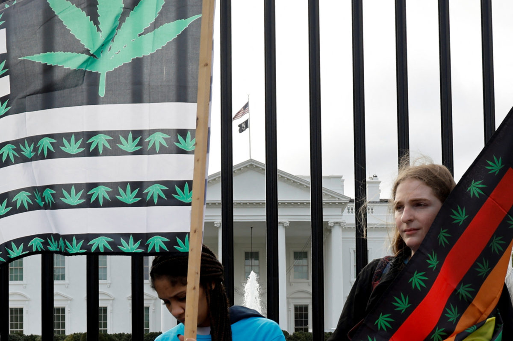

Recreational Marijuana:
A New Era For Marylanders
By Lydia Hurley
College Park, MD
Dec. 8, 2022
Just a few weeks ago at the midterm elections on Nov. 8, Maryland voters hit the polls to cast their votes on the legalization of cannabis, making Maryland the 20th state in the U.S. to legalize recreational cannabis use.

Demonstrators in front of the White House rally for President Biden to release all prisoners jailed for
marijuana-related charges on Oct. 24, 2022.
Photo by Johnathan Ernst for REUTERS and featured on PBS News Hour.
For Maryland residents, their stance on question four spans far beyond just legality. To many, the vote to
legalize weed will mark a significant change in the way residents see the presence of recreational drugs
changing in their social circles, as well as in their local communities.
To many Marylanders, a “yes” vote to legalize marijuana seemed timely, even predictable. Google Trends
showed an uptick in searches for the terms “weed legalization,” “dispensaries,” and “recreational marijuana”
in Maryland all in the past year, with its peak hitting during election season.
A trend map showing the data interest in the term "weed legalization" in the state of Maryland over the past 12 months. Created by Lydia Hurley using Google Trends.
This is a big win for Maryland, said Laura Goodfield, president of the
Students for Sensible Drug Policy (SSDP) chapter at The George Washington University. Serving as president
of the chapter has allowed her to able to connect with other passionate individuals in the field and broaden
her understand of legalization as a public health issue, Goodfield said.

Members of SSDP at The George Washington University attending their university action training on Oct. 27, 2022. Photo courtesy of SSDP's blog post, "We Made Good Trouble on the Front Steps of the White House."
“Maryland has been home to a lot of prohibitionist politicians who have been extremely outspoken about being anti-cannabis and even protested DC’s legalization. My hope is that the state will focus on equity and make sure not only licensure is going towards individuals disproportionately impacted by the war on drugs, but also business loans," Goodfield said.
Despite this, a poll released in March 2021 by Goucher College found that two-thirds of Maryland adults
favored
the legalization of recreational marijuana. This was the highest percentage in support for legalization the
state has ever seen, based on past polls, Goucher pollsters said.
When it came to clinching a yes vote on Election Day, Maryland voters delivered overwhelmingly. 67 percent
of
voters voted yes on question four, while 32 percent voted no, according to The New York Times. Baltimore
City,
Prince George’s County, and Montgomery County were the three counties with the highest percentage of voters
in
favor, the publication’s election day polls revealed.
Considering a smaller demographic, college-aged students who go to college in Maryland were overwhelmingly
in
favor of legalization. 90 percent of University of Maryland students surveyed were in favor of legalizing
recreational cannabis, according to an opinion survey conducted three weeks after Election Day.
Voters indicating their favoritism for recreational cannabis use doesn’t always translate to an equal amount
of yes
votes, though. Of the Maryland students surveyed, only 58 percent cast a yes vote on Election Day. The other
41
percent either did not vote in this election or were ineligible to vote in Maryland, according to the
survey.
Some of the students surveyed voiced their concerns and uncertainty about the passing of this new
legalization.
The most common concern, with 53 percent of students listing it as their number one concern, was safety
regarding where marijuana comes from. The second most common concern was high prices and taxes, with 41
percent
of students listing cost as a concern.
Peter Reuter, a distinguished university professor in the Department of Criminology and Criminal Justice at
the
University of Maryland, as well as an expert on drug policy, addressed some public health concerns. Reuter
shared how the legalization of cannabis tends to change drug policy and access in other states and how that
might impact Maryland.
Another major trend we have seen in states that have legalized marijuana is a notable decrease in price,
Reuter
said. Some of the first states to legalize cannabis, like Washington and Colorado, are now able to produce
at a
much cheaper price. This is due to the loosened restrictions on how much cannabis growers can produce and
where
they’re able to produce it, said Reuter.
“Marijuana could get a lot cheaper. Within two years of Michigan legalizing cannabis, prices fell 35 to 40
percent. And it just keeps on falling,” Reuter said.
As for the concerns related to safety in accessing marijuana, Reuter explained that dispensary cannabis is
typically safer due to higher levels of regulation. However, potency is turning into a major issue, Reuter
said.
Most tested cannabis in the past few decades had only 5 to 25 percent THC, but dispensary-approved marijuana
now
can have anywhere from 50 to 90 percent THC, Reuter added. This is a concern, especially for daily users who
are
at risk for overuse.
Thanks to the yes vote on Election Day, the Maryland Constitution will be amended so that individuals 21
years
or older in the state of Maryland will be authorized to use and possess marijuana. The Maryland General
Assembly
will also be authorized to "provide for the use, distribution, possession, regulation, and taxation of
cannabis
within the state," according to Ballotpedia.